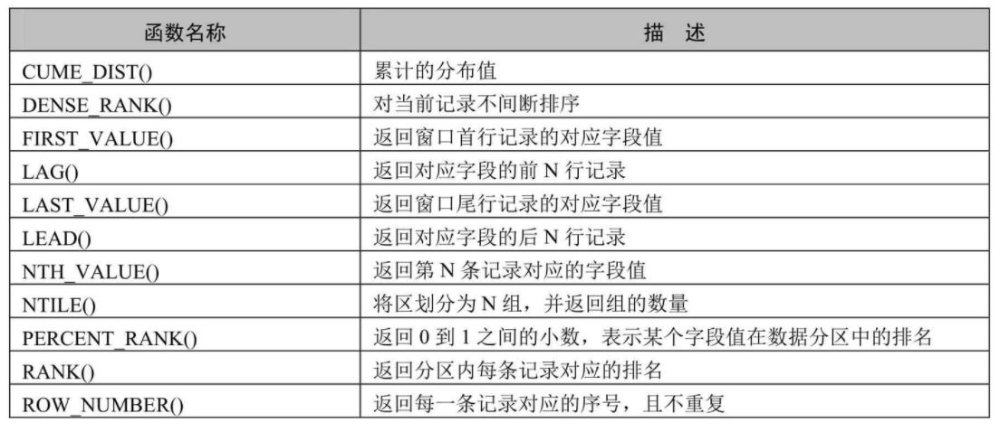

MySQL8新特性概述
一樣跳過
MySQL從5.7版本直接跳躍發佈了8.0版本，可見這是一個令人興奮的里程碑版本。MySQL 8版本在功能上做了顯著的改進與增強，開發者對MySQL的原始程式碼進行了重構，最突出的一點是多MySQL Optimizer優化器進行了改進。不僅在速度上得到了改善，還為使用者帶來了更好的性能和更棒的體驗。
1.1 MySQL8.0 新增特性
1. 更簡便的NoSQL支持 NoSQL泛指非關係型資料庫和資料存儲。隨著互聯網平臺的規模飛速發展，傳統的關係型資料庫已經越來越不能滿足需求。從5.6版本開始，MySQL就開始支援簡單的NoSQL存儲功能。MySQL 8對這一功能做了優化，以更靈活的方式實現NoSQL功能，不再依賴模式（schema）。
2. 更好的索引
在查詢中，正確地使用索引可以提高查詢的效率。MySQL 8中新增了隱藏索引和降冪索引。隱藏索引可以用來測試去掉索引對查詢性能的影響。在查詢中混合存在多列索引時，使用降冪索引可以提高查詢的性能。
3.更完善的JSON支援
MySQL從5.7開始支援原生JSON資料的存儲，MySQL 8對這一功能做了優化，增加了彙總函式JSON_ARRAYAGG()和JSON_OBJECTAGG()，將參數聚合為JSON陣列或物件，新增了行內操作符 -»，是列路徑運算子 ->的增強，對JSON排序做了提升，並優化了JSON的更新操作。
4.安全和帳戶管理
MySQL 8中新增了caching_sha2_password 授權外掛程式、角色、密碼歷史記錄和FIPS模式支援，這些特性提高了資料庫的安全性和性能，使資料庫管理員能夠更靈活地進行帳戶管理工作。
5.InnoDB的變化
InnoDB是MySQL預設的存儲引擎，是事務型資料庫的首選引擎，支援事務安全表（ACID），支持行鎖定和外鍵。在MySQL 8 版本中，InnoDB在自增、索引、加密、鎖死、共用鎖等方面做了大量的改進和優化，並且支援原子資料定義語言（DDL），提高了資料安全性，對事務提供更好的支援。
6.資料字典 在之前的MySQL版本中，字典資料都存儲在中繼資料檔和非事務表中。從MySQL 8開始新增了交易資料字典，在這個字典裡存儲著資料庫物件資訊，這些資料字典存儲在內部事務表中。
7. 原子資料定義語句
MySQL 8開始支援原子資料定義語句（Automic DDL），即原子DDL。目前，只有InnoDB存儲引擎支援原子DDL。原子資料定義語句（DDL）將與DDL操作相關的資料字典更新、存儲引擎操作、二進位日誌寫入結合到一個單獨的原子事務中，這使得即使伺服器崩潰，事務也會提交或回滾。
使用支援原子操作的存儲引擎所創建的表，在執行DROP TABLE、CREATE TABLE、ALTER TABLE、 RENAME TABLE、TRUNCATE TABLE、CREATE TABLESPACE、DROP TABLESPACE等操作時，都支援原子操作，即事務要麼完全操作成功，要麼失敗後回滾，不再進行部分提交。
對於從MySQL 5.7複製到MySQL 8 版本中的語句，可以添加IF EXISTS或IF NOT EXISTS語句來避免發生錯誤。
8.資源管理 MySQL 8開始支援創建和管理資源組，允許將伺服器內運行的執行緒分配給特定的分組，以便執行緒根據組內可用資源執行。組屬性能夠控制組內資源，啟用或限制組內資源消耗。資料庫管理員能夠根據不同的工作負載適當地更改這些屬性。 目前，CPU時間是可控資源，由"虛擬CPU"這個概念來表示，此術語包含CPU的核心數，超執行緒，硬體執行緒等等。伺服器在啟動時確定可用的虛擬CPU數量。擁有對應許可權的資料庫管理員可以將這些CPU與資源組關聯，並為資源組分配執行緒。 資源組元件為MySQL中的資源組管理提供了SQL介面。資源組的屬性用於定義資源組。MySQL中存在兩個預設組，系統組和使用者組，預設的組不能被刪除，其屬性也不能被更改。對於用戶自訂的組，資源組創建時可初始化所有的屬性，除去名字和類型，其他屬性都可在創建之後進行更改。 在一些平臺下，或進行了某些MySQL的配置時，資源管理的功能將受到限制，甚至不可用。例如，如果安裝了執行緒池外掛程式，或者使用的是macOS系統，資源管理將處於不可用狀態。在FreeBSD和Solaris系統中，資源執行緒優先順序將失效。在Linux系統中，只有配置了CAP_SYS_NICE屬性，資源管理優先順序才能發揮作用。
9.字元集支援
MySQL 8中預設的字元集由latin1更改為utf8mb4，並首次增加了日語所特定使用的集合，utf8mb4_ja_0900_as_cs。
10.優化器增強 MySQL優化器開始支援隱藏索引和降冪索引。隱藏索引不會被優化器使用，驗證索引的必要性時不需要刪除索引，先將索引隱藏，如果優化器性能無影響就可以真正地刪除索引。降冪索引允許優化器對多個列進行排序，並且允許排序順序不一致。
11.公用表運算式
公用表運算式（Common Table Expressions）簡稱為CTE，MySQL現在支持遞迴和非遞迴兩種形式的CTE。CTE通過在SELECT語句或其他特定語句前使用WITH語句對臨時結果集進行命名。
基礎語法如下：
WITH cte_name (col_name1,col_name2 ...) AS (Subquery)
SELECT * FROM cte_name;
Subquery代表子查詢，子查詢前使用WITH語句將結果集命名為cte_name，在後續的查詢中即可使用cte_name進行查詢。
12.視窗函數
MySQL 8開始支援視窗函數。在之前的版本中已存在的大部分彙總函式在MySQL 8中也可以作為視窗函數來使用。

13.規則運算式支持 MySQL在8.0.4以後的版本中採用支援Unicode的國際化元件庫實現規則運算式操作，這種方式不僅能提供完全的Unicode支援，而且是多位元組安全編碼。MySQL增加了REGEXP_LIKE()、EGEXP_INSTR()、REGEXP_REPLACE()和 REGEXP_SUBSTR()等函數來提升性能。另外，regexp_stack_limit和regexp_time_limit 系統變數能夠通過匹配引擎來控制資源消耗。
14.內部臨時表
TempTable存儲引擎取代MEMORY存儲引擎成為內部臨時表的預設存儲引擎。TempTable存儲引擎為VARCHAR和VARBINARY列提供高效存儲。internal_tmp_mem_storage_engine會話變數定義了內部臨時表的存儲引擎，可選的值有兩個，TempTable和MEMORY，其中TempTable為預設的存儲引擎。temptable_max_ram系統組態項定義了TempTable存儲引擎可使用的最大記憶體數量。
15.日誌記錄 在MySQL 8中錯誤日誌子系統由一系列MySQL元件構成。這些元件的構成由系統變數log_error_services來配置，能夠實現日誌事件的過濾和寫入。
16.備份鎖 新的備份鎖允許線上備份期間執行資料動作陳述式，同時阻止可能造成快照不一致的操作。新備份鎖由 LOCK INSTANCE FOR BACKUP 和 UNLOCK INSTANCE 語法提供支援，執行這些操作需要備份管理員特權。
17.增強的MySQL複製
MySQL 8複製支援對JSON文檔進行部分更新的二進位日誌記錄，該記錄使用緊湊的二進位格式，從而節省記錄完整JSON文檔的空間。當使用基於語句的日誌記錄時，這種緊湊的日誌記錄會自動完成，並且可以通過將新的binlog_row_value_options系統變數值設置為PARTIAL_JSON來啟用。
1.2 MySQL8.0移除的舊特性
在MySQL 5.7版本上開發的應用程式如果使用了MySQL8.0 移除的特性，語句可能會失敗，或者產生不同的執行結果。為了避免這些問題，對於使用了移除特性的應用，應當盡力修正避免使用這些特性，並盡可能使用替代方法。
1. 查詢緩存
查詢緩存已被移除，刪除的項有：
**（1）語句：**FLUSH QUERY CACHE和RESET QUERY CACHE。
**（2）系統變數：**query_cache_limit、query_cache_min_res_unit、query_cache_size、query_cache_type、query_cache_wlock_invalidate。
**（3）狀態變數：**Qcache_free_blocks、Qcache_free_memory、Qcache_hits、Qcache_inserts、Qcache_lowmem_prunes、Qcache_not_cached、Qcache_queries_in_cache、Qcache_total_blocks。
**（4）執行緒狀態：**checking privileges on cached query、checking query cache for query、invalidating query cache entries、sending cached result to client、storing result in query cache、waiting for query cache lock。
2.加密相關 刪除的加密相關的內容有：ENCODE()、DECODE()、ENCRYPT()、DES_ENCRYPT()和DES_DECRYPT()函數，配置項des-key-file，系統變數have_crypt，FLUSH語句的DES_KEY_FILE選項，HAVE_CRYPT CMake選項。 對於移除的ENCRYPT()函數，考慮使用SHA2()替代，對於其他移除的函數，使用AES_ENCRYPT()和AES_DECRYPT()替代。
3.空間函數相關 在MySQL 5.7版本中，多個空間函數已被標記為過時。這些過時函數在MySQL 8中都已被移除，只保留了對應的ST_和MBR函數。
4.\N和NULL 在SQL語句中，解析器不再將\N視為NULL，所以在SQL語句中應使用NULL代替\N。這項變化不會影響使用LOAD DATA INFILE或者SELECT…INTO OUTFILE操作檔的導入和匯出。在這類操作中，NULL仍等同於\N。
5. mysql_install_db 在MySQL分佈中，已移除了mysql_install_db程式，資料字典初始化需要調用帶著–initialize或者–initialize-insecure選項的mysqld來代替實現。另外，–bootstrap和INSTALL_SCRIPTDIR CMake也已被刪除。
6.通用分區處理常式 通用分區處理常式已從MySQL服務中被移除。為了實現給定表分區，表所使用的存儲引擎需要自有的分區處理常式。 提供本地分區支援的MySQL存儲引擎有兩個，即InnoDB和NDB，而在MySQL 8中只支持InnoDB。
7.系統和狀態變數資訊 在INFORMATION_SCHEMA資料庫中，對系統和狀態變數資訊不再進行維護。GLOBAL_VARIABLES、SESSION_VARIABLES、GLOBAL_STATUS、SESSION_STATUS表都已被刪除。另外，系統變數show_compatibility_56也已被刪除。被刪除的狀態變數有Slave_heartbeat_period、Slave_last_heartbeat,Slave_received_heartbeats、Slave_retried_transactions、Slave_running。以上被刪除的內容都可使用性能模式中對應的內容進行替代。
8.mysql_plugin工具 mysql_plugin工具用來配置MySQL伺服器外掛程式，現已被刪除，可使用–plugin-load或–plugin-load-add選項在伺服器啟動時載入外掛程式或者在運行時使用INSTALL PLUGIN語句載入外掛程式來替代該工具。
2. 新特性1：視窗函數
2.1 使用視窗函數前後對比
假設我現在有這樣一個資料表，它顯示了某購物網站在每個城市每個區的銷售額：
CREATE TABLE sales(
id INT PRIMARY KEY AUTO_INCREMENT,
city VARCHAR(15),
county VARCHAR(15),
sales_value DECIMAL
);
INSERT INTO sales(city,county,sales_value)
VALUES
('北京','海澱',10.00),
('北京','朝陽',20.00),
('上海','黃埔',30.00),
('上海','長寧',10.00);
查詢：
mysql> SELECT * FROM sales;
+----+------+--------+-------------+
| id | city | county | sales_value |
+----+------+--------+-------------+
| 1 | 北京 | 海澱 | 10 |
| 2 | 北京 | 朝陽 | 20 |
| 3 | 上海 | 黃埔 | 30 |
| 4 | 上海 | 長寧 | 10 |
+----+------+--------+-------------+
4 rows in set (0.00 sec)
**需求：**現在計算這個網站在每個城市的銷售總額、在全國的銷售總額、每個區的銷售額占所在城市銷售額中的比率，以及占總銷售額中的比率。
如果用分組和彙總函式，就需要分好幾步來計算。
第一步，計算總銷售金額，並存入臨時表 a：
CREATE TEMPORARY TABLE a -- 創建臨時表
SELECT SUM(sales_value) AS sales_value -- 計算總計金額
FROM sales;
查看一下臨時表 a ：
mysql> SELECT * FROM a;
+-------------+
| sales_value |
+-------------+
| 70 |
+-------------+
1 row in set (0.00 sec)
第二步，計算每個城市的銷售總額並存入臨時表 b：
CREATE TEMPORARY TABLE b -- 創建臨時表
SELECT city,SUM(sales_value) AS sales_value -- 計算城市銷售合計
FROM sales
GROUP BY city;
查看臨時表 b ：
mysql> SELECT * FROM b;
+------+-------------+
| city | sales_value |
+------+-------------+
| 北京 | 30 |
| 上海 | 40 |
+------+-------------+
2 rows in set (0.00 sec)
第三步，計算各區的銷售占所在城市的總計金額的比例，和占全部銷售總計金額的比例。我們可以通過下面的連接查詢獲得需要的結果：
mysql> SELECT s.city AS 城市,s.county AS 區,s.sales_value AS 區銷售額,
-> b.sales_value AS 市銷售額,s.sales_value/b.sales_value AS 市比率,
-> a.sales_value AS 總銷售額,s.sales_value/a.sales_value AS 總比率
-> FROM sales s
-> JOIN b ON (s.city=b.city) -- 連接市統計結果臨時表
-> JOIN a -- 連接總計金額臨時表
-> ORDER BY s.city,s.county;
+------+------+----------+----------+--------+----------+--------+
| 城市 | 區 | 區銷售額 | 市銷售額 | 市比率 | 總銷售額 | 總比率 |
+------+------+----------+----------+--------+----------+--------+
| 上海 | 長寧 | 10 | 40 | 0.2500 | 70 | 0.1429 |
| 上海 | 黃埔 | 30 | 40 | 0.7500 | 70 | 0.4286 |
| 北京 | 朝陽 | 20 | 30 | 0.6667 | 70 | 0.2857 |
| 北京 | 海澱 | 10 | 30 | 0.3333 | 70 | 0.1429 |
+------+------+----------+----------+--------+----------+--------+
4 rows in set (0.00 sec)
結果顯示：市銷售金額、市銷售占比、總銷售金額、總銷售占比都計算出來了。
同樣的查詢，如果用視窗函數，就簡單多了。我們可以用下面的代碼來實現：
mysql> SELECT city AS 城市,county AS 區,sales_value AS 區銷售額,
-> SUM(sales_value) OVER(PARTITION BY city) AS 市銷售額, -- 計算市銷售額
-> sales_value/SUM(sales_value) OVER(PARTITION BY city) AS 市比率,
-> SUM(sales_value) OVER() AS 總銷售額, -- 計算總銷售額
-> sales_value/SUM(sales_value) OVER() AS 總比率
-> FROM sales
-> ORDER BY city,county;
+------+------+----------+----------+--------+----------+--------+
| 城市 | 區 | 區銷售額 | 市銷售額 | 市比率 | 總銷售額 | 總比率 |
+------+------+----------+----------+--------+----------+--------+
| 上海 | 長寧 | 10 | 40 | 0.2500 | 70 | 0.1429 |
| 上海 | 黃埔 | 30 | 40 | 0.7500 | 70 | 0.4286 |
| 北京 | 朝陽 | 20 | 30 | 0.6667 | 70 | 0.2857 |
| 北京 | 海澱 | 10 | 30 | 0.3333 | 70 | 0.1429 |
+------+------+----------+-----------+--------+----------+--------+
4 rows in set (0.00 sec)
結果顯示，我們得到了與上面那種查詢同樣的結果。
使用視窗函數，只用了一步就完成了查詢。而且，由於沒有用到臨時表，執行的效率也更高了。很顯然，在這種需要用到分組統計的結果對每一條記錄進行計算的場景下，使用視窗函數更好。
2.2 視窗函數分類
MySQL從8.0版本開始支援視窗函數。視窗函數的作用類似於在查詢中對資料進行分組，不同的是，分組操作會把分組的結果聚合成一條記錄，而視窗函數是將結果置於每一條資料記錄中。
視窗函數可以分為靜態視窗函數和動態視窗函數。
- 靜態視窗函數的視窗大小是固定的，不會因為記錄的不同而不同；
- 動態視窗函數的視窗大小會隨著記錄的不同而變化。
MySQL官方網站視窗函數的網址為https://dev.mysql.com/doc/refman/8.0/en/window-function-descriptions.html#function_row-number。
視窗函數總體上可以分為序號函數、分佈函數、前後函數、首尾函數和其他函數，如下表：

2.3 語法結構
視窗函數的語法結構是：
函數 OVER（[PARTITION BY 欄位名 ORDER BY 欄位名 ASC|DESC]）
或者是：
函數 OVER 視窗名 … WINDOW 視窗名 AS （[PARTITION BY 欄位名 ORDER BY 欄位名 ASC|DESC]）
- OVER 關鍵字指定函數視窗的範圍。
- 如果省略後面括弧中的內容，則視窗會包含滿足WHERE條件的所有記錄，視窗函數會基於所有滿足WHERE條件的記錄進行計算。
- 如果OVER關鍵字後面的括弧不為空，則可以使用如下語法設置視窗。
- 窗口名：為視窗設置一個別名，用來標識視窗。
- PARTITION BY子句：指定視窗函數按照哪些欄位進行分組。分組後，視窗函數可以在每個分組中分別執行。
- ORDER BY子句：指定視窗函數按照哪些欄位進行排序。執行排序操作使視窗函數按照排序後的資料記錄的順序進行編號。
- FRAME子句：為分區中的某個子集定義規則，可以用來作為滑動視窗使用。
2.4 分類講解
創建表：
CREATE TABLE goods(
id INT PRIMARY KEY AUTO_INCREMENT,
category_id INT,
category VARCHAR(15),
NAME VARCHAR(30),
price DECIMAL(10,2),
stock INT,
upper_time DATETIME
);
添加數據：
INSERT INTO goods(category_id,category,NAME,price,stock,upper_time)
VALUES
(1, '女裝/女士精品', 'T恤', 39.90, 1000, '2020-11-10 00:00:00'),
(1, '女裝/女士精品', '連衣裙', 79.90, 2500, '2020-11-10 00:00:00'),
(1, '女裝/女士精品', '衛衣', 89.90, 1500, '2020-11-10 00:00:00'),
(1, '女裝/女士精品', '牛仔褲', 89.90, 3500, '2020-11-10 00:00:00'),
(1, '女裝/女士精品', '百褶裙', 29.90, 500, '2020-11-10 00:00:00'),
(1, '女裝/女士精品', '呢絨外套', 399.90, 1200, '2020-11-10 00:00:00'),
(2, '戶外運動', '自行車', 399.90, 1000, '2020-11-10 00:00:00'),
(2, '戶外運動', '山地自行車', 1399.90, 2500, '2020-11-10 00:00:00'),
(2, '戶外運動', '登山杖', 59.90, 1500, '2020-11-10 00:00:00'),
(2, '戶外運動', '騎行裝備', 399.90, 3500, '2020-11-10 00:00:00'),
(2, '戶外運動', '運動外套', 799.90, 500, '2020-11-10 00:00:00'),
(2, '戶外運動', '滑板', 499.90, 1200, '2020-11-10 00:00:00');
下面針對goods表中的資料來驗證每個視窗函數的功能。
1. 序號函數
1．ROW_NUMBER()函數
ROW_NUMBER()函數能夠對資料中的序號進行順序顯示。
舉例：查詢 goods 資料表中每個商品分類下價格降冪排列的各個商品資訊。
mysql> SELECT ROW_NUMBER() OVER(PARTITION BY category_id ORDER BY price DESC) AS row_num,
-> id, category_id, category, NAME, price, stock
-> FROM goods;
+---------+----+-------------+---------------+------------+---------+-------+
| row_num | id | category_id | category | NAME | price | stock |
+---------+----+-------------+---------------+------------+---------+-------+
| 1 | 6 | 1 | 女裝/女士精品 | 呢絨外套 | 399.90 | 1200 |
| 2 | 3 | 1 | 女裝/女士精品 | 衛衣 | 89.90 | 1500 |
| 3 | 4 | 1 | 女裝/女士精品 | 牛仔褲 | 89.90 | 3500 |
| 4 | 2 | 1 | 女裝/女士精品 | 連衣裙 | 79.90 | 2500 |
| 5 | 1 | 1 | 女裝/女士精品 | T恤 | 39.90 | 1000 |
| 6 | 5 | 1 | 女裝/女士精品 | 百褶裙 | 29.90 | 500 |
| 1 | 8 | 2 | 戶外運動 | 山地自行車 | 1399.90 | 2500 |
| 2 | 11 | 2 | 戶外運動 | 運動外套 | 799.90 | 500 |
| 3 | 12 | 2 | 戶外運動 | 滑板 | 499.90 | 1200 |
| 4 | 7 | 2 | 戶外運動 | 自行車 | 399.90 | 1000 |
| 5 | 10 | 2 | 戶外運動 | 騎行裝備 | 399.90 | 3500 |
| 6 | 9 | 2 | 戶外運動 | 登山杖 | 59.90 | 1500 |
+---------+----+-------------+---------------+------------+---------+-------+
12 rows in set (0.00 sec)
舉例：查詢 goods 資料表中每個商品分類下價格最高的3種商品資訊。
mysql> SELECT *
-> FROM (
-> SELECT ROW_NUMBER() OVER(PARTITION BY category_id ORDER BY price DESC) AS row_num,
-> id, category_id, category, NAME, price, stock
-> FROM goods) t
-> WHERE row_num <= 3;
+---------+----+-------------+---------------+------------+---------+-------+
| row_num | id | category_id | category | NAME | price | stock |
+---------+----+-------------+---------------+------------+---------+-------+
| 1 | 6 | 1 | 女裝/女士精品 | 呢絨外套 | 399.90 | 1200 |
| 2 | 3 | 1 | 女裝/女士精品 | 衛衣 | 89.90 | 1500 |
| 3 | 4 | 1 | 女裝/女士精品 | 牛仔褲 | 89.90 | 3500 |
| 1 | 8 | 2 | 戶外運動 | 山地自行車 | 1399.90 | 2500 |
| 2 | 11 | 2 | 戶外運動 | 運動外套 | 799.90 | 500 |
| 3 | 12 | 2 | 戶外運動 | 滑板 | 499.90 | 1200 |
+---------+----+-------------+---------------+------------+----------+-------+
6 rows in set (0.00 sec)
在名稱為"女裝/女士精品"的商品類別中，有兩款商品的價格為89.90元，分別是衛衣和牛仔褲。兩款商品的序號都應該為2，而不是一個為2，另一個為3。此時，可以使用RANK()函數和DENSE_RANK()函數解決。
2．RANK()函數
使用RANK()函數能夠對序號進行並列排序，並且會跳過重複的序號，比如序號為1、1、3。
舉例：使用RANK()函數獲取 goods 資料表中各類別的價格從高到低排序的各商品資訊。
mysql> SELECT RANK() OVER(PARTITION BY category_id ORDER BY price DESC) AS row_num,
-> id, category_id, category, NAME, price, stock
-> FROM goods;
+---------+----+-------------+---------------+------------+---------+-------+
| row_num | id | category_id | category | NAME | price | stock |
+---------+----+-------------+---------------+------------+---------+-------+
| 1 | 6 | 1 | 女裝/女士精品 | 呢絨外套 | 399.90 | 1200 |
| 2 | 3 | 1 | 女裝/女士精品 | 衛衣 | 89.90 | 1500 |
| 2 | 4 | 1 | 女裝/女士精品 | 牛仔褲 | 89.90 | 3500 |
| 4 | 2 | 1 | 女裝/女士精品 | 連衣裙 | 79.90 | 2500 |
| 5 | 1 | 1 | 女裝/女士精品 | T恤 | 39.90 | 1000 |
| 6 | 5 | 1 | 女裝/女士精品 | 百褶裙 | 29.90 | 500 |
| 1 | 8 | 2 | 戶外運動 | 山地自行車 | 1399.90 | 2500 |
| 2 | 11 | 2 | 戶外運動 | 運動外套 | 799.90 | 500 |
| 3 | 12 | 2 | 戶外運動 | 滑板 | 499.90 | 1200 |
| 4 | 7 | 2 | 戶外運動 | 自行車 | 399.90 | 1000 |
| 4 | 10 | 2 | 戶外運動 | 騎行裝備 | 399.90 | 3500 |
| 6 | 9 | 2 | 戶外運動 | 登山杖 | 59.90 | 1500 |
+---------+----+-------------+---------------+------------+---------+-------+
12 rows in set (0.00 sec)
舉例：使用RANK()函數獲取 goods 資料表中類別為"女裝/女士精品"的價格最高的4款商品資訊。
mysql> SELECT *
-> FROM(
-> SELECT RANK() OVER(PARTITION BY category_id ORDER BY price DESC) AS row_num,
-> id, category_id, category, NAME, price, stock
-> FROM goods) t
-> WHERE category_id = 1 AND row_num <= 4;
+---------+----+-------------+---------------+----------+--------+-------+
| row_num | id | category_id | category | NAME | price | stock |
+---------+----+-------------+---------------+----------+--------+-------+
| 1 | 6 | 1 | 女裝/女士精品 | 呢絨外套 | 399.90 | 1200 |
| 2 | 3 | 1 | 女裝/女士精品 | 衛衣 | 89.90 | 1500 |
| 2 | 4 | 1 | 女裝/女士精品 | 牛仔褲 | 89.90 | 3500 |
| 4 | 2 | 1 | 女裝/女士精品 | 連衣裙 | 79.90 | 2500 |
+---------+----+-------------+---------------+----------+--------+-------+
4 rows in set (0.00 sec)
可以看到，使用RANK()函數得出的序號為1、2、2、4，相同價格的商品序號相同，後面的商品序號是不連續的，跳過了重複的序號。
3．DENSE_RANK()函數
DENSE_RANK()函數對序號進行並列排序，並且不會跳過重複的序號，比如序號為1、1、2。
舉例：使用DENSE_RANK()函數獲取 goods 資料表中各類別的價格從高到低排序的各商品資訊。
mysql> SELECT DENSE_RANK() OVER(PARTITION BY category_id ORDER BY price DESC) AS row_num,
-> id, category_id, category, NAME, price, stock
-> FROM goods;
+---------+----+-------------+---------------+------------+---------+-------+
| row_num | id | category_id | category | NAME | price | stock |
+---------+----+-------------+---------------+------------+---------+-------+
| 1 | 6 | 1 | 女裝/女士精品 | 呢絨外套 | 399.90 | 1200 |
| 2 | 3 | 1 | 女裝/女士精品 | 衛衣 | 89.90 | 1500 |
| 2 | 4 | 1 | 女裝/女士精品 | 牛仔褲 | 89.90 | 3500 |
| 3 | 2 | 1 | 女裝/女士精品 | 連衣裙 | 79.90 | 2500 |
| 4 | 1 | 1 | 女裝/女士精品 | T恤 | 39.90 | 1000 |
| 5 | 5 | 1 | 女裝/女士精品 | 百褶裙 | 29.90 | 500 |
| 1 | 8 | 2 | 戶外運動 | 山地自行車 | 1399.90 | 2500 |
| 2 | 11 | 2 | 戶外運動 | 運動外套 | 799.90 | 500 |
| 3 | 12 | 2 | 戶外運動 | 滑板 | 499.90 | 1200 |
| 4 | 7 | 2 | 戶外運動 | 自行車 | 399.90 | 1000 |
| 4 | 10 | 2 | 戶外運動 | 騎行裝備 | 399.90 | 3500 |
| 5 | 9 | 2 | 戶外運動 | 登山杖 | 59.90 | 1500 |
+---------+----+-------------+---------------+------------+---------+-------+
12 rows in set (0.00 sec)
舉例：使用DENSE_RANK()函數獲取 goods 資料表中類別為"女裝/女士精品"的價格最高的4款商品資訊。
mysql> SELECT *
-> FROM(
-> SELECT DENSE_RANK() OVER(PARTITION BY category_id ORDER BY price DESC) AS row_num,
-> id, category_id, category, NAME, price, stock
-> FROM goods) t
-> WHERE category_id = 1 AND row_num <= 3;
+---------+----+-------------+---------------+----------+--------+-------+
| row_num | id | category_id | category | NAME | price | stock |
+---------+----+-------------+---------------+----------+--------+-------+
| 1 | 6 | 1 | 女裝/女士精品 | 呢絨外套 | 399.90 | 1200 |
| 2 | 3 | 1 | 女裝/女士精品 | 衛衣 | 89.90 | 1500 |
| 2 | 4 | 1 | 女裝/女士精品 | 牛仔褲 | 89.90 | 3500 |
| 3 | 2 | 1 | 女裝/女士精品 | 連衣裙 | 79.90 | 2500 |
+---------+----+-------------+---------------+----------+--------+-------+
4 rows in set (0.00 sec)
可以看到，使用DENSE_RANK()函數得出的行號為1、2、2、3，相同價格的商品序號相同，後面的商品序號是連續的，並且沒有跳過重複的序號。
2. 分佈函數
1．PERCENT_RANK()函數
PERCENT_RANK()函數是等級值百分比函數。按照如下方式進行計算。
(rank - 1) / (rows - 1)
其中，rank的值為使用RANK()函數產生的序號，rows的值為當前視窗的總記錄數。
舉例：計算 goods 資料表中名稱為"女裝/女士精品"的類別下的商品的PERCENT_RANK值。
#寫法一：
SELECT RANK() OVER (PARTITION BY category_id ORDER BY price DESC) AS r,
PERCENT_RANK() OVER (PARTITION BY category_id ORDER BY price DESC) AS pr,
id, category_id, category, NAME, price, stock
FROM goods
WHERE category_id = 1;
#寫法二：
mysql> SELECT RANK() OVER w AS r,
-> PERCENT_RANK() OVER w AS pr,
-> id, category_id, category, NAME, price, stock
-> FROM goods
-> WHERE category_id = 1 WINDOW w AS (PARTITION BY category_id ORDER BY price DESC);
+---+-----+----+-------------+---------------+----------+--------+-------+
| r | pr | id | category_id | category | NAME | price | stock |
+---+-----+----+-------------+---------------+----------+--------+-------+
| 1 | 0 | 6 | 1 | 女裝/女士精品 | 呢絨外套 | 399.90 | 1200 |
| 2 | 0.2 | 3 | 1 | 女裝/女士精品 | 衛衣 | 89.90 | 1500 |
| 2 | 0.2 | 4 | 1 | 女裝/女士精品 | 牛仔褲 | 89.90 | 3500 |
| 4 | 0.6 | 2 | 1 | 女裝/女士精品 | 連衣裙 | 79.90 | 2500 |
| 5 | 0.8 | 1 | 1 | 女裝/女士精品 | T恤 | 39.90 | 1000 |
| 6 | 1 | 5 | 1 | 女裝/女士精品 | 百褶裙 | 29.90 | 500 |
+---+-----+----+-------------+---------------+----------+--------+-------+
6 rows in set (0.00 sec)
2．CUME_DIST()函數
CUME_DIST()函數主要用於查詢小於或等於某個值的比例。
舉例：查詢goods資料表中小於或等於當前價格的比例。
mysql> SELECT CUME_DIST() OVER(PARTITION BY category_id ORDER BY price ASC) AS cd,
-> id, category, NAME, price
-> FROM goods;
+---------------------+----+---------------+------------+---------+
| cd | id | category | NAME | price |
+---------------------+----+---------------+------------+---------+
| 0.16666666666666666 | 5 | 女裝/女士精品 | 百褶裙 | 29.90 |
| 0.3333333333333333 | 1 | 女裝/女士精品 | T恤 | 39.90 |
| 0.5 | 2 | 女裝/女士精品 | 連衣裙 | 79.90 |
| 0.8333333333333334 | 3 | 女裝/女士精品 | 衛衣 | 89.90 |
| 0.8333333333333334 | 4 | 女裝/女士精品 | 牛仔褲 | 89.90 |
| 1 | 6 | 女裝/女士精品 | 呢絨外套 | 399.90 |
| 0.16666666666666666 | 9 | 戶外運動 | 登山杖 | 59.90 |
| 0.5 | 7 | 戶外運動 | 自行車 | 399.90 |
| 0.5 | 10 | 戶外運動 | 騎行裝備 | 399.90 |
| 0.6666666666666666 | 12 | 戶外運動 | 滑板 | 499.90 |
| 0.8333333333333334 | 11 | 戶外運動 | 運動外套 | 799.90 |
| 1 | 8 | 戶外運動 | 山地自行車 | 1399.90 |
+---------------------+----+---------------+------------+---------+
12 rows in set (0.00 sec)
3. 前後函數
1．LAG(expr,n)函數
LAG(expr,n)函數返回當前行的前n行的expr的值。
舉例：查詢goods資料表中前一個商品價格與當前商品價格的差值。
mysql> SELECT id, category, NAME, price, pre_price, price - pre_price AS diff_price
-> FROM (
-> SELECT id, category, NAME, price,LAG(price,1) OVER w AS pre_price
-> FROM goods
-> WINDOW w AS (PARTITION BY category_id ORDER BY price)) t;
+----+---------------+------------+---------+-----------+------------+
| id | category | NAME | price | pre_price | diff_price |
+----+---------------+------------+---------+-----------+------------+
| 5 | 女裝/女士精品 | 百褶裙 | 29.90 | NULL | NULL |
| 1 | 女裝/女士精品 | T恤 | 39.90 | 29.90 | 10.00 |
| 2 | 女裝/女士精品 | 連衣裙 | 79.90 | 39.90 | 40.00 |
| 3 | 女裝/女士精品 | 衛衣 | 89.90 | 79.90 | 10.00 |
| 4 | 女裝/女士精品 | 牛仔褲 | 89.90 | 89.90 | 0.00 |
| 6 | 女裝/女士精品 | 呢絨外套 | 399.90 | 89.90 | 310.00 |
| 9 | 戶外運動 | 登山杖 | 59.90 | NULL | NULL |
| 7 | 戶外運動 | 自行車 | 399.90 | 59.90 | 340.00 |
| 10 | 戶外運動 | 騎行裝備 | 399.90 | 399.90 | 0.00 |
| 12 | 戶外運動 | 滑板 | 499.90 | 399.90 | 100.00 |
| 11 | 戶外運動 | 運動外套 | 799.90 | 499.90 | 300.00 |
| 8 | 戶外運動 | 山地自行車 | 1399.90 | 799.90 | 600.00 |
+----+---------------+------------+---------+-----------+------------+
12 rows in set (0.00 sec)
2．LEAD(expr,n)函數
LEAD(expr,n)函數返回當前行的後n行的expr的值。
舉例：查詢goods資料表中後一個商品價格與當前商品價格的差值。
mysql> SELECT id, category, NAME, behind_price, price,behind_price - price AS diff_price
-> FROM(
-> SELECT id, category, NAME, price,LEAD(price, 1) OVER w AS behind_price
-> FROM goods WINDOW w AS (PARTITION BY category_id ORDER BY price)) t;
+----+---------------+------------+--------------+---------+------------+
| id | category | NAME | behind_price | price | diff_price |
+----+---------------+------------+--------------+---------+------------+
| 5 | 女裝/女士精品 | 百褶裙 | 39.90 | 29.90 | 10.00 |
| 1 | 女裝/女士精品 | T恤 | 79.90 | 39.90 | 40.00 |
| 2 | 女裝/女士精品 | 連衣裙 | 89.90 | 79.90 | 10.00 |
| 3 | 女裝/女士精品 | 衛衣 | 89.90 | 89.90 | 0.00 |
| 4 | 女裝/女士精品 | 牛仔褲 | 399.90 | 89.90 | 310.00 |
| 6 | 女裝/女士精品 | 呢絨外套 | NULL | 399.90 | NULL |
| 9 | 戶外運動 | 登山杖 | 399.90 | 59.90 | 340.00 |
| 7 | 戶外運動 | 自行車 | 399.90 | 399.90 | 0.00 |
| 10 | 戶外運動 | 騎行裝備 | 499.90 | 399.90 | 100.00 |
| 12 | 戶外運動 | 滑板 | 799.90 | 499.90 | 300.00 |
| 11 | 戶外運動 | 運動外套 | 1399.90 | 799.90 | 600.00 |
| 8 | 戶外運動 | 山地自行車 | NULL | 1399.90 | NULL |
+----+---------------+------------+--------------+---------+------------+
12 rows in set (0.00 sec)
4. 首尾函數
1．FIRST_VALUE(expr)函數
FIRST_VALUE(expr)函數返回第一個expr的值。
舉例：按照價格排序，查詢第1個商品的價格資訊。
mysql> SELECT id, category, NAME, price, stock,FIRST_VALUE(price) OVER w AS first_price
-> FROM goods WINDOW w AS (PARTITION BY category_id ORDER BY price);
+----+---------------+------------+---------+-------+-------------+
| id | category | NAME | price | stock | first_price |
+----+---------------+------------+---------+-------+-------------+
| 5 | 女裝/女士精品 | 百褶裙 | 29.90 | 500 | 29.90 |
| 1 | 女裝/女士精品 | T恤 | 39.90 | 1000 | 29.90 |
| 2 | 女裝/女士精品 | 連衣裙 | 79.90 | 2500 | 29.90 |
| 3 | 女裝/女士精品 | 衛衣 | 89.90 | 1500 | 29.90 |
| 4 | 女裝/女士精品 | 牛仔褲 | 89.90 | 3500 | 29.90 |
| 6 | 女裝/女士精品 | 呢絨外套 | 399.90 | 1200 | 29.90 |
| 9 | 戶外運動 | 登山杖 | 59.90 | 1500 | 59.90 |
| 7 | 戶外運動 | 自行車 | 399.90 | 1000 | 59.90 |
| 10 | 戶外運動 | 騎行裝備 | 399.90 | 3500 | 59.90 |
| 12 | 戶外運動 | 滑板 | 499.90 | 1200 | 59.90 |
| 11 | 戶外運動 | 運動外套 | 799.90 | 500 | 59.90 |
| 8 | 戶外運動 | 山地自行車 | 1399.90 | 2500 | 59.90 |
+----+---------------+------------+---------+-------+-------------+
12 rows in set (0.00 sec)
2．LAST_VALUE(expr)函數
LAST_VALUE(expr)函數返回最後一個expr的值。
舉例：按照價格排序，查詢最後一個商品的價格資訊。
mysql> SELECT id, category, NAME, price, stock,LAST_VALUE(price) OVER w AS last_price
-> FROM goods WINDOW w AS (PARTITION BY category_id ORDER BY price);
+----+---------------+------------+---------+-------+------------+
| id | category | NAME | price | stock | last_price |
+----+---------------+------------+---------+-------+------------+
| 5 | 女裝/女士精品 | 百褶裙 | 29.90 | 500 | 29.90 |
| 1 | 女裝/女士精品 | T恤 | 39.90 | 1000 | 39.90 |
| 2 | 女裝/女士精品 | 連衣裙 | 79.90 | 2500 | 79.90 |
| 3 | 女裝/女士精品 | 衛衣 | 89.90 | 1500 | 89.90 |
| 4 | 女裝/女士精品 | 牛仔褲 | 89.90 | 3500 | 89.90 |
| 6 | 女裝/女士精品 | 呢絨外套 | 399.90 | 1200 | 399.90 |
| 9 | 戶外運動 | 登山杖 | 59.90 | 1500 | 59.90 |
| 7 | 戶外運動 | 自行車 | 399.90 | 1000 | 399.90 |
| 10 | 戶外運動 | 騎行裝備 | 399.90 | 3500 | 399.90 |
| 12 | 戶外運動 | 滑板 | 499.90 | 1200 | 499.90 |
| 11 | 戶外運動 | 運動外套 | 799.90 | 500 | 799.90 |
| 8 | 戶外運動 | 山地自行車 | 1399.90 | 2500 | 1399.90 |
+----+---------------+------------+---------+-------+------------+
12 rows in set (0.00 sec)
5. 其他函數
1．NTH_VALUE(expr,n)函數
NTH_VALUE(expr,n)函數返回第n個expr的值。
舉例：查詢goods資料表中排名第2和第3的價格資訊。
mysql> SELECT id, category, NAME, price,NTH_VALUE(price,2) OVER w AS second_price,
-> NTH_VALUE(price,3) OVER w AS third_price
-> FROM goods WINDOW w AS (PARTITION BY category_id ORDER BY price);
+----+---------------+------------+---------+--------------+-------------+
| id | category | NAME | price | second_price | third_price |
+----+---------------+------------+---------+--------------+-------------+
| 5 | 女裝/女士精品 | 百褶裙 | 29.90 | NULL | NULL |
| 1 | 女裝/女士精品 | T恤 | 39.90 | 39.90 | NULL |
| 2 | 女裝/女士精品 | 連衣裙 | 79.90 | 39.90 | 79.90 |
| 3 | 女裝/女士精品 | 衛衣 | 89.90 | 39.90 | 79.90 |
| 4 | 女裝/女士精品 | 牛仔褲 | 89.90 | 39.90 | 79.90 |
| 6 | 女裝/女士精品 | 呢絨外套 | 399.90 | 39.90 | 79.90 |
| 9 | 戶外運動 | 登山杖 | 59.90 | NULL | NULL |
| 7 | 戶外運動 | 自行車 | 399.90 | 399.90 | 399.90 |
| 10 | 戶外運動 | 騎行裝備 | 399.90 | 399.90 | 399.90 |
| 12 | 戶外運動 | 滑板 | 499.90 | 399.90 | 399.90 |
| 11 | 戶外運動 | 運動外套 | 799.90 | 399.90 | 399.90 |
| 8 | 戶外運動 | 山地自行車 | 1399.90 | 399.90 | 399.90 |
+----+---------------+------------+---------+--------------+-------------+
12 rows in set (0.00 sec)
2．NTILE(n)函數
NTILE(n)函數將分區中的有序數據分為n個桶，記錄桶編號。
舉例：將goods表中的商品按照價格分為3組。
mysql> SELECT NTILE(3) OVER w AS nt,id, category, NAME, price
-> FROM goods WINDOW w AS (PARTITION BY category_id ORDER BY price);
+----+----+---------------+------------+---------+
| nt | id | category | NAME | price |
+----+----+---------------+------------+---------+
| 1 | 5 | 女裝/女士精品 | 百褶裙 | 29.90 |
| 1 | 1 | 女裝/女士精品 | T恤 | 39.90 |
| 2 | 2 | 女裝/女士精品 | 連衣裙 | 79.90 |
| 2 | 3 | 女裝/女士精品 | 衛衣 | 89.90 |
| 3 | 4 | 女裝/女士精品 | 牛仔褲 | 89.90 |
| 3 | 6 | 女裝/女士精品 | 呢絨外套 | 399.90 |
| 1 | 9 | 戶外運動 | 登山杖 | 59.90 |
| 1 | 7 | 戶外運動 | 自行車 | 399.90 |
| 2 | 10 | 戶外運動 | 騎行裝備 | 399.90 |
| 2 | 12 | 戶外運動 | 滑板 | 499.90 |
| 3 | 11 | 戶外運動 | 運動外套 | 799.90 |
| 3 | 8 | 戶外運動 | 山地自行車 | 1399.90 |
+----+----+---------------+------------+---------+
12 rows in set (0.00 sec)
2.5 小 結
視窗函數的特點是可以分組，而且可以在分組內排序。另外，視窗函數不會因為分組而減少原表中的行數，這對我們在原表資料的基礎上進行統計和排序非常有用。
3. 新特性2：公用表運算式
公用表運算式（或通用表運算式）簡稱為CTE（Common Table Expressions）。CTE是一個命名的臨時結果集，作用範圍是當前語句。CTE可以理解成一個可以複用的子查詢，當然跟子查詢還是有點區別的，CTE可以引用其他CTE，但子查詢不能引用其他子查詢。所以，可以考慮代替子查詢。
依據語法結構和執行方式的不同，公用表運算式分為普通公用表運算式和遞迴公用表運算式 2 種。
3.1 普通公用表運算式
普通公用表運算式的語法結構是：
WITH CTE名稱
AS （子查詢）
SELECT|DELETE|UPDATE 語句;
普通公用表運算式類似於子查詢，不過，跟子查詢不同的是，它可以被多次引用，而且可以被其他的普通公用表運算式所引用。
舉例：查詢員工所在的部門的詳細資訊。
mysql> SELECT * FROM departments
-> WHERE department_id IN (
-> SELECT DISTINCT department_id
-> FROM employees
-> );
+---------------+------------------+------------+-------------+
| department_id | department_name | manager_id | location_id |
+---------------+------------------+------------+-------------+
| 10 | Administration | 200 | 1700 |
| 20 | Marketing | 201 | 1800 |
| 30 | Purchasing | 114 | 1700 |
| 40 | Human Resources | 203 | 2400 |
| 50 | Shipping | 121 | 1500 |
| 60 | IT | 103 | 1400 |
| 70 | Public Relations | 204 | 2700 |
| 80 | Sales | 145 | 2500 |
| 90 | Executive | 100 | 1700 |
| 100 | Finance | 108 | 1700 |
| 110 | Accounting | 205 | 1700 |
+---------------+------------------+------------+-------------+
11 rows in set (0.00 sec)
這個查詢也可以用普通公用表運算式的方式完成：
mysql> WITH emp_dept_id
-> AS (SELECT DISTINCT department_id FROM employees)
-> SELECT *
-> FROM departments d JOIN emp_dept_id e
-> ON d.department_id = e.department_id;
+---------------+------------------+------------+-------------+---------------+
| department_id | department_name | manager_id | location_id | department_id |
+---------------+------------------+------------+-------------+---------------+
| 90 | Executive | 100 | 1700 | 90 |
| 60 | IT | 103 | 1400 | 60 |
| 100 | Finance | 108 | 1700 | 100 |
| 30 | Purchasing | 114 | 1700 | 30 |
| 50 | Shipping | 121 | 1500 | 50 |
| 80 | Sales | 145 | 2500 | 80 |
| 10 | Administration | 200 | 1700 | 10 |
| 20 | Marketing | 201 | 1800 | 20 |
| 40 | Human Resources | 203 | 2400 | 40 |
| 70 | Public Relations | 204 | 2700 | 70 |
| 110 | Accounting | 205 | 1700 | 110 |
+---------------+------------------+------------+-------------+---------------+
11 rows in set (0.00 sec)
例子說明，公用表運算式可以起到子查詢的作用。以後如果遇到需要使用子查詢的場景，你可以在查詢之前，先定義公用表運算式，然後在查詢中用它來代替子查詢。而且，跟子查詢相比，公用表運算式有一個優點，就是定義過公用表運算式之後的查詢，可以像一個表一樣多次引用公用表運算式，而子查詢則不能。
3.2 遞迴公用表運算式
遞迴公用表運算式也是一種公用表運算式，只不過，除了普通公用表運算式的特點以外，它還有自己的特點，就是可以調用自己。它的語法結構是：
WITH RECURSIVE
CTE名稱 AS （子查詢）
SELECT|DELETE|UPDATE 語句;
遞迴公用表運算式由 2 部分組成，分別是種子查詢和遞迴查詢，中間通過關鍵字 UNION [ALL]進行連接。這裡的種子查詢，意思就是獲得遞迴的初始值。這個查詢只會運行一次，以創建初始資料集，之後遞迴查詢會一直執行，直到沒有任何新的查詢資料產生，遞迴返回。
**案例：**針對於我們常用的employees表，包含employee_id，last_name和manager_id三個欄位。如果a是b的管理者，那麼，我們可以把b叫做a的下屬，如果同時b又是c的管理者，那麼c就是b的下屬，是a的下下屬。
下面我們嘗試用查詢語句列出所有具有下下屬身份的人員資訊。
如果用我們之前學過的知識來解決，會比較複雜，至少要進行 4 次查詢才能搞定：
-
第一步，先找出初代管理者，就是不以任何別人為管理者的人，把結果存入臨時表；
-
第二步，找出所有以初代管理者為管理者的人，得到一個下屬集，把結果存入臨時表；
-
第三步，找出所有以下屬為管理者的人，得到一個下下屬集，把結果存入臨時表。
-
第四步，找出所有以下下屬為管理者的人，得到一個結果集。
如果第四步的結果集為空，則計算結束，第三步的結果集就是我們需要的下下屬集了，否則就必須繼續進行第四步，一直到結果集為空為止。比如上面的這個資料表，就需要到第五步，才能得到空結果集。而且，最後還要進行第六步：把第三步和第四步的結果集合並，這樣才能最終獲得我們需要的結果集。
如果用遞迴公用表運算式，就非常簡單了。我介紹下具體的思路。
-
用遞迴公用表運算式中的種子查詢，找出初代管理者。欄位 n 表示代次，初始值為 1，表示是第一代管理者。
-
用遞迴公用表運算式中的遞迴查詢，查出以這個遞迴公用表運算式中的人為管理者的人，並且代次的值加 1。直到沒有人以這個遞迴公用表運算式中的人為管理者了，遞迴返回。
-
在最後的查詢中，選出所有代次大於等於 3 的人，他們肯定是第三代及以上代次的下屬了，也就是下下屬了。這樣就得到了我們需要的結果集。
這裡看似也是 3 步，實際上是一個查詢的 3 個部分，只需要執行一次就可以了。而且也不需要用臨時表保存中間結果，比剛剛的方法簡單多了。
代碼實現：
WITH RECURSIVE cte
AS
(
SELECT employee_id,last_name,manager_id,1 AS n FROM employees WHERE employee_id = 100 -- 種子查詢，找到第一代領導
UNION ALL
SELECT a.employee_id,a.last_name,a.manager_id,n+1 FROM employees AS a JOIN cte
ON (a.manager_id = cte.employee_id) -- 遞迴查詢，找出以遞迴公用表運算式的人為領導的人
)
SELECT employee_id,last_name FROM cte WHERE n >= 3;
總之，遞迴公用表運算式對於查詢一個有共同的根節點的樹形結構資料，非常有用。它可以不受層級的限制，輕鬆查出所有節點的資料。如果用其他的查詢方式，就比較複雜了。
3.3 小 結
公用表運算式的作用是可以替代子查詢，而且可以被多次引用。遞迴公用表運算式對查詢有一個共同根節點的樹形結構資料非常高效，可以輕鬆搞定其他查詢方式難以處理的查詢。
上次修改於 2021-12-29